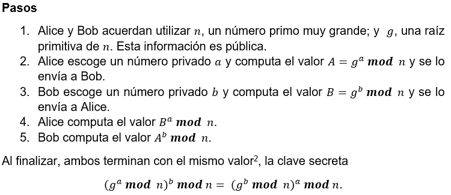

Seguridad Informática: Encriptación de la Información
Juan Luis Baldelomar
jlbc95@gmail.com
Estudiante de Ingeniería en Ciencias y Sistemas - USAC
Palabras clave: Encrypt, private key, public key, Diffie-Hellman, RSA, AES, Symmetric Cryptography, Asymmetric Cryptography.
El crecimiento de la tecnología en el área de la computación y comunicaciones ha presentado un sesgo exponencial. Hace algunas décadas se consideraba imposible tener un computador en una casa debido a su gran tamaño y costo, ahora es posible tener una computadora mucho más poderosa que una supercomputadora de esa época en una mano, conocido actualmente como Smartphone. Esto nos puede dar una idea de que tan rápido ha avanzado la tecnología en esos campos. Debido a estos avances, las tecnologías de comunicación y computación han sido utilizadas para acelerar el procesamiento de grandes cantidades de información y optimizar la forma en como esta información se transmite de un punto a otro. Este paso de información muchas veces se hace a través de una red (puede ser llevado a cabo a través de un dispositivo de memoria físico, a través de otra tecnología como bluetooth, etc…) ya sea interna o externa. Aquí es donde surge un problema, ¿Cómo se garantiza que en este paso de información de un punto a otro, un tercero que se encuentre husmeando no pueda tener acceso a esta información? Uno podría pensar “¿A quién le puede interesar lo que yo hablo con otra persona?”, pero la realidad es que la información el día de hoy tiene un gran valor para quienes saben qué hacer con ella. Las empresas pagarían miles para poder tener acceso a los libros de contabilidad de su competencia, empresas que venden servicios y productos pagan miles para saber qué quieren la mayoría de personas y obtener así más clientes, incluso un escenario más concreto es el caso que Edward Snowden1 dio a conocer en el 2013 de como la NSA espiaba a ciudadanos estadounidenses y de todo el mundo para tener un mejor control a nivel mundial. La solución a este problema no es únicamente evitar que algún tercero obtenga esta información, sino también considerar el caso en que pueda obtenerla pero no entenderla y a esto es lo que se le conoce como encriptación.
La encriptación es una técnica utilizada como medida de seguridad para la transmisión de información que se basa en la criptografía. La criptografía es una ciencia que aplica complejos conceptos de matemática y lógica para ocultar el significado de un mensaje. No se debe confundir la encriptación con la esteganografía. Esta última consiste en ocultar un mensaje en algún objeto de manera que este pase inadvertido. La encriptación, en cambio, consiste en volver un mensaje ilegible mediante una clave de tal manera que solo se pueda volver legible mediante el proceso inverso con la clave correcta. Es decir, el mensaje puede ser visto por alguien ajeno, pero inentendible.
En la imagen 1 podemos observar que tenemos 3 participantes. Andrea y Carlos, que son quienes desean comunicarse, y Jose quien desea husmear en la conversación. A ese escenario se le conoce como “Man in the Middle Attack”. Se debe comprender que Andrea y Carlos pueden ser dos personas que se desean comunicar a través de la red, o bien Carlos puede ser un servidor que provee algún servicio a través de la red como una cuenta de banca online; cual sea el caso, la información que es enviada a través en dicha comunicación debe ser transmitida de forma segura.
Imagen 1 Autor: Imagen Propia
Inicios de la Criptografía
La criptografía nace debido a la guerra. Hace cientos de años los imperios necesitaban información para poder entrar en un conflicto bélico y poder planear estrategias de conquista y prevención. Esto dio origen a la necesidad de esconder el significado de esa información para que espías e infiltrados enemigos no pudieran comprenderla. Así mismo, también dio origen a la búsqueda de técnicas para poder romper esta medida de seguridad y así poder tomar ventaja sobre sus enemigos.
Los criptógrafos de esa época utilizaban 3 métodos para encriptar la información: sustitución, transposición y códigos. No entraremos en detalles de estos métodos porque no es el objetivo principal de este artículo discutir toda la historia de la criptografía.
Criptografía Contemporánea
La criptografía ha tenido muchos avances desde sus inicios. Diversos algoritmos de cifrado han sido inventados; tras ser vulnerados se llegó a la conclusión de que un buen algoritmo de cifrado debe hacer imposible encontrar el texto original sin el conocimiento de la clave. Los sistemas de criptografía hoy en día se pueden dividir en tres principalmente: simétricos, asimétricos e híbridos. Cada uno posee sus características positivas y negativas. Se podría decir que técnicamente un mensaje encriptado con uno de estos sistemas no es imposible de descifrar, pero esto aplica únicamente en el ámbito teórico debido a que llevarlo a la práctica conlleva el uso de una enorme cantidad de recursos y tiempo. Si abordamos el problema desde el punto de vista de recursos, se llega a la conclusión que actualmente todavía no se cuenta con el poder de procesamiento para vulnerar uno de esos sistemas, y si hablamos de tiempo se encuentra que para vulnerar un mensaje encriptado con uno de los algoritmos utilizados hoy en día se requiere de más tiempo que el tiempo de vida del universo observable.
Criptografía Simétrica
La criptografía simétrica se basa en el uso de una única clave para encriptar y desencriptar un mensaje. Esta clave debe ser conocida por el emisor y el receptor en un proceso de comunicación para que ambas tareas puedan ser logradas, de lo contrario el receptor no podría desencriptar el mensaje, y es aquí donde se encuentra la debilidad de este proceso. ¿Cómo garantizar que la clave no sea interceptada? De este punto surgen formas ingeniosas que tratan de dar solución a esta problemática como la criptografía híbrida. Ahora bien, en cuanto a encriptación de datos locales se refiere no cabe duda alguna que este sería el método adecuado por su fuerte seguridad y rapidez.
Criptografía Asimétrica
Se pudo observar que la criptografía simétrica tiene una debilidad en cuanto a establecer una comunicación; dado que el mensaje se encripta y desencripta con una misma clave, esta debe ser enviada al receptor, y si la clave es transmitida por un canal inseguro puede ser interceptada, lo que haría inútil nuestro algoritmo de encriptación. Entonces ¿Cómo poder asegurar que un mensaje sea encriptado y desencriptado sin tener que enviar la clave? Aquí es donde nace la criptografía asimétrica. También conocida como criptografía de clave pública, la criptografía asimétrica nace en la década de 1970 en donde saber cómo enviar un mensaje encriptado no ayuda a saber cómo desencriptarlo. El sistema funciona con dos claves, la clave pública y la clave privada. La clave pública es utilizada para encriptar los mensajes y es de conocimiento de todos los que puedan observar la conversación, por eso es pública. La clave privada en cambio es utilizada para desencriptar los mensajes y únicamente el receptor debe conocerla. Cada sujeto que interactúa en la conversación tiene ambas llaves y son únicas. Estas dos claves poseen alguna relación matemática compleja y difícil de computar; por lo tanto el conocimiento de la llave pública no permite a alguien recuperar el mensaje original sin un ataque de fuerza bruta. La desventaja de los algoritmos que implementan criptografía asimétrica es que son más lentos y un poco más vulnerables a estos ataques de fuerza bruta si las claves que se utilizan para encriptar son relativamente pequeñas (100 dígitos).
Criptografía Híbrida {#criptografía-híbrida}
Ahora que ya se vio un poco de ambos acercamientos, criptografía simétrica y asimétrica, analicemos sus características positivas y negativas. En el caso de la criptografía simétrica su fuerte seguridad y resistencia a ataques de fuerza bruta y además su rapidez son aspectos positivos, pero requiere de una misma llave para encriptar y desencriptar el mensaje y esta puede no ser transmitida por un canal seguro lo cual resulta siendo un aspecto negativo. En el caso de la criptografía asimétrica se utiliza dos claves, una pública y una privada, por lo cual no es necesario utilizar la misma clave para desencriptar el mensaje y esta no debe ser transmitida con el mensaje y eso resulta ser algo positivo, pero es considerablemente más lento y más vulnerable a ataques de fuerza bruta considerando que la factorización de números primos muy grandes es un área que avanza más y más cada vez. En consideración de esto surge otro acercamiento, la criptografía híbrida. La criptografía híbrida, como su nombre lo puede delatar, es la mezcla de los dos acercamientos anteriores, en donde se utiliza algún algoritmo de criptografía simétrica, como AES, para encriptar el mensaje y se utiliza algún algoritmo de criptografía asimétrica, como RSA, para encriptar la llave del algoritmo simétrico y transmitirla por un canal o medio que no es seguro.
Protocolos de Encriptación {#protocolos-de-encriptación}
Se ha hablado de como la criptografía puede ser utilizada para volver seguro un mensaje, y como puede ser utilizada de forma general en el intercambio de mensajes, sin embargo eso no es suficiente para la transmisión de información de manera segura y esto se consigue con los protocolos de Encriptación. Hablaremos de como la criptografía puede ser utilizada para el intercambio de una clave secreta por medio de un canal de comunicación inseguro.
Diffie-Hellman Key Exchange
El protocolo de intercambio de clave Diffie-Hellman es un protocolo que dos sujetos pueden utilizar para compartir una llave secreta por un canal de comunicación inseguro sin haber compartido nada de información en el pasado. Generar una clave secreta compartida entre dos personas es algo de mucha utilidad. Se podría utilizar como clave privada de un sistema de criptografía simétrica. El protocolo fue descrito por Whitfield Diffie y Martin Hellman en 1976.
 Autor: Propia
Si n es lo suficientemente grande, como un número de 300 dígitos, y también lo son a y b, como un número de 100 dígitos cada uno, el sistema se considera totalmente seguro contra ataques de fuerza bruta con el poder de cómputo con el que se cuenta actualmente.
Imagen 2 Autor: Wikipedia User Dirección Electrónica de la Imagen: https://en.wikipedia.org/wiki/Public-key\_cryptography
Recomendaciones
Cuando se desea transmitir información privada por un canal de comunicación inseguro, aún si nosotros no la consideramos importante, debemos encriptar le información.
Si se desea encriptar la información para almacenarla de manera local se recomienda utilizar el algoritmo AES por su seguridad y rapidez.
Si se desea enviar información por un canal de comunicación inseguro se recomienda utilizar un algoritmo asimétrico como RSA o un método híbrido, encriptando los datos con el algoritmo simétrico y encriptando la llave de este con un algoritmo asimétrico.
Conclusiones
La criptografía es la ciencia que se encarga de aplicar conceptos matemáticos y lógicos para ocultar el sentido de la información.
La criptografía simétrica es altamente segura y rápida para la encriptación de datos, pero el uso de una misma clave para encritpar y desencriptar la información es un punto vulnerable.
La criptografía asimétrica utiliza dos claves, una pública y una privada para encriptar y desencriptar la información respectivamente, pero el proceso que conlleva es más lento.
La encriptación de la seguridad es solo una de las herramientas de seguridad informática y no debe tomarse a la ligera ninguno de los otros aspectos que este campo abarca solo por tener la información encriptada.
Referencias
- “Chapter 7: The Role of Cryptography in Information Security” Disponible en: Enlace \[Consultado: 28/01/2018\]
“Advanced Encryption Standar” Disponible en: http://nvlpubs.nist.gov/nistpubs/FIPS/NIST.FIPS.197.pdf \[Consultado: 30/01/2018\]
Kenneth H. Rosen, Discrete Mathematics and Its Applications, 7th Edition, McGraw-Hill, Monmouth University 2012, 1071 pp.
Edward Snowden es un ciudadano estadounidense de 34 años que trabajó para varias agencias de inteligencia. Es reconocido principalmente en la actualidad por los documentos que libero en el año 2013 que detallaban como estas agencias espiaban a ciudadanos de varios países. Actualmente reside en Rusia. Referencias: https://www.edwardsnowden.com/
https://www.theguardian.com/us-news/2017/jan/18/edward-snowden-allowed-to-stay-in-russia-for-a-couple-of-years↩